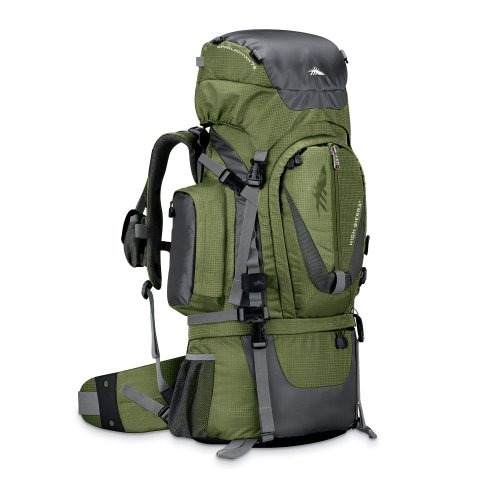
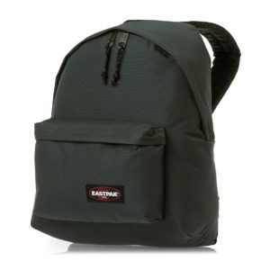
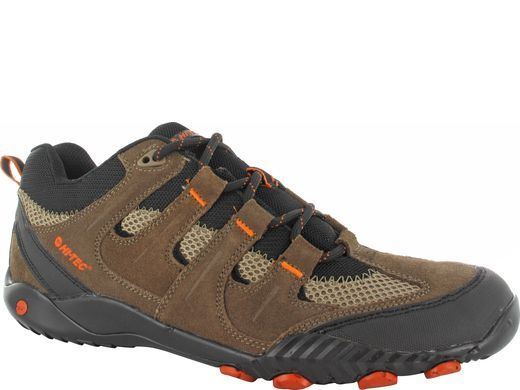

Vacunas para ir a Asia
¿Cuáles son las vacunas recomendables para China?
- Hepatitis A. Inyectable en el brazo.
- Cólera (Dukoral). Dos dosis (separación entre 1-6 semanas entre ambas) vía oral mediante solución líquida.
- Fiebre Tifoidea (Vivotif). Tres cápsulas. Tomar 1 dosis, esperar un día, tomar la segunda dosis, dejar otro día y tomar la última dosis. Nada de tomarlas tres días seguidos. Su efecto protector empieza a los 10 días por lo que tómalas al menos 15 días antes del viaje.
- Paludismo (Malarone). Más conocida como «malaria» son más de 10 pastillas que hay que tomar de forma seguida cuando se considere que hay riesgo de contagio. Se empezarían a tomar el día de antes del supuesto riesgo y desde entonces cada día una hasta «terminar» el posible riesgo.
Además me recomendaron mirar los niveles de tétano, hacerme una analítica general para ver como estaban el estado de mis vacunas anteriores, y la gripe en el caso de viajar en temporada de Invierno.
Ropa para viajar de Mochilero a Asia
Creo conveniente crear un post de ayuda acerca de la ropa para ir a China en el caso de ir por libre, como mochileros. Preparando el viaje encontré poca información al respecto, solo la que los viajeros compartían en foros.
Por supuesto si aun no has decidido como viajar a China te recomiendo sin ningún tipo de dudas ir por libre, comprar un vuelo y organizarlo a tu gusto. No es solo por el precio (te saldrá hasta un 50% más barato) sino que verás lo que tu quieras, con tus horarios y podrás ver la verdadera China y no lo más turístico y explotado.
Pero también vas a tener dificultades, idioma, intento de timos, costumbres… La ropa en el caso de ir de mochileros será uno de esos problemas al no tener lugar de residencia fijo ni «compañías» que se encarguen de tus maletas.
¿Qué ropa me llevo a China para un viaje de mochilero? Nada de maletas. Recomiendo llevar una mochila grande (unos 60-70 litros será suficiente) como la de la imagen:
Esta mochila (Trekking High Sierra 75 Y 65 Lts) será nuestra casa a cuestas o también os propongo esta otra High Sierra de 55 Litros más económica y sin tanta capacidad que podéis encontrar en Amazon aquí. Hay llevaremos lo necesario para vivir. Teniendo en cuenta que China es el país de las imitaciones vamos a encontrar camisetas, pantalones, calzado, todo tipo de ropa a precios ridículos (eje: 2 € una camiseta) por lo que no debemos abusar y llevar lo básico.
En la mochila grande aparte de la ropa vamos a guardar las medicinas, calzado, toallas, utensilios, higiene, etc…
Luego una mochila escolar pequeña (las típicas que hemos usado siempre para diario) como esta de Eastpack, o la clásica negra de Mi-Pac que es la yo uso a menudo.
Que tendremos la obligación de llevar siempre con nosotros, ya que hay vamos a llevar las tarjetas de crédito, dinero en efectivo, pasaporte, DNI, guías y mapas. Mientras que la mochila grande la dejaremos en los albergues donde nos alojemos esta mochila tiene que ser parte de nuestro cuerpo y venir siempre con nosotros.
Lo necesario en nuestro viaje a China como mochilero son las mochilas (valga la redundancia) y el calzado.
en en cuenta que vamos a estar todo el día de un lado para otro, recorriendo las ciudades, andando, subiendo cuestas, escaleras e incluso en bicicleta. Tiendas como Sprinter, Coronel Tapioca, El Corte Ingles venden calzado para andar, montaña, etc… Recomendamos ir a una de ellas y preguntar. En mi caso me pillé estas Hi-Tec Terra Active Rápido en Sprinter por 39 €, o cualquier otro modelo de Hi-Tec que podéis comprar por un precio similar
Lo bueno de China es los precios y el regateo, por lo que unos días antes de volveros a vuestro país podéis comprar una buena maleta (100 rmb, poco más de 10 €) y llenarla de recuerdos y ropa de imitación barata.
De todas maneras dejo una lista de la ropa que me voy a llevar para un viaje de 15 días por libre a China: